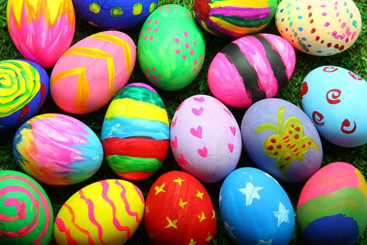
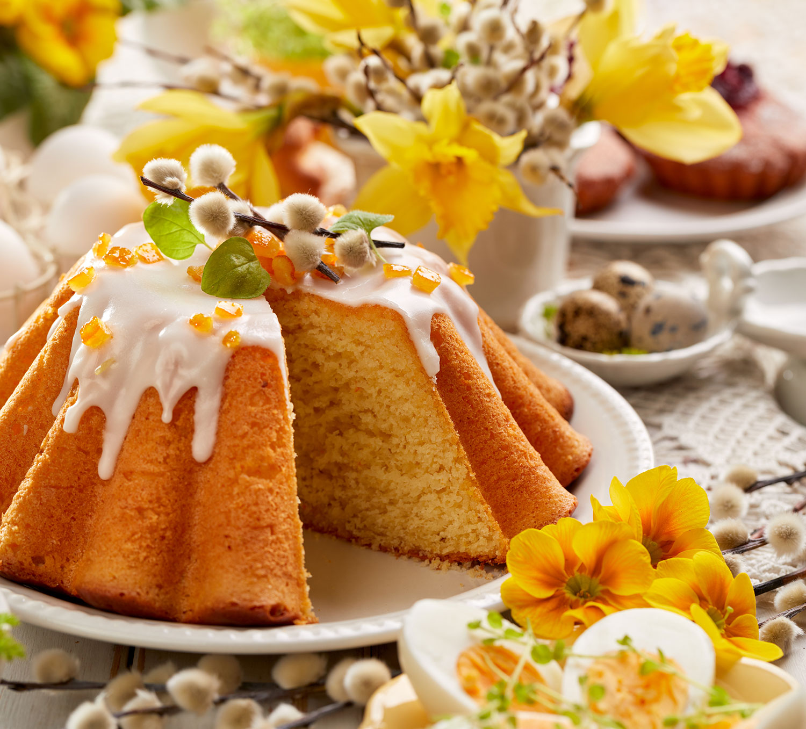
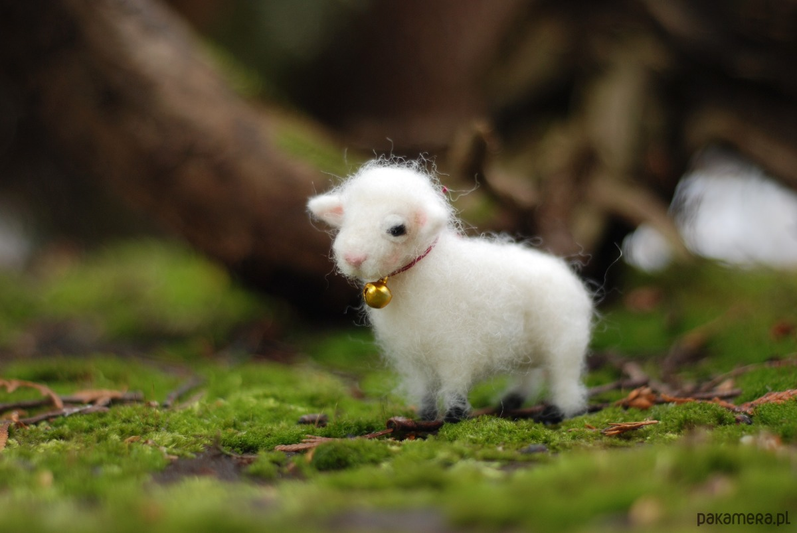
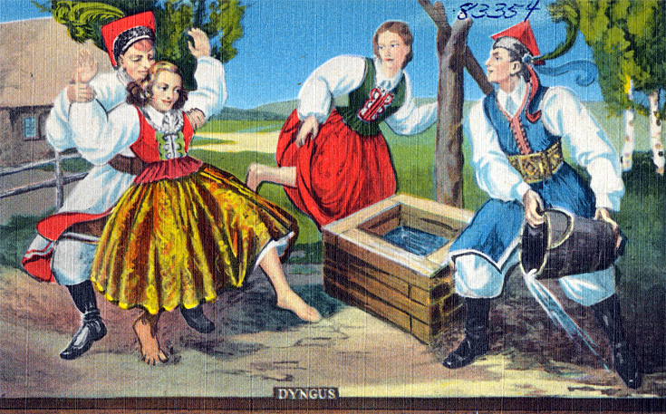

Jajka wielkanocne
Tuż przed Świętami przychodzi czas na kreatywny i jeden z przyjemniejszych zwyczajów wielkanocnych: malowanie pisanek. Jajka od dawna są symbolem rodzącego się życia, co bezpośrednio odnosi się do zmartwychwstania Jezusa Chrystusa. Dawniej uważano, że naturalnie barwione (np. w wywarze z cebuli) jajka mają magiczną moc i mogą leczyć choroby..
Babka wielkanocna
Wizerunek tego zwierzątka jest symbolicznym przedstawieniem Jezusa Chrystusa, jego mękę, śmierć i zmartwychwstanie. Przekazy ze Starego Testamentu dotyczące ofiary z tego zwierzęcia porównuje się do tej, którą złożył chrześcijański mesjasz na krzyżu..
Baranek wielkanocny
Wizerunek tego zwierzątka jest symbolicznym przedstawieniem Jezusa Chrystusa, jego mękę, śmierć i zmartwychwstanie. Przekazy ze Starego Testamentu dotyczące ofiary z tego zwierzęcia porównuje się do tej, którą złożył chrześcijański mesjasz na krzyżu.
Lany poniedziałek
W Wielki Poniedziałek (drugi dzień Świąt) przypada oczekiwany, zwłaszcza przez najmłodszych, lany poniedziałek, inaczej zwany śmigusem-dyngusem. Zwyczaj oblewania ludzi wodą pochodzi jeszcze z czasów pogańskich, choć dawniej śmigus i dyngus były odrębnymi obrządkami
